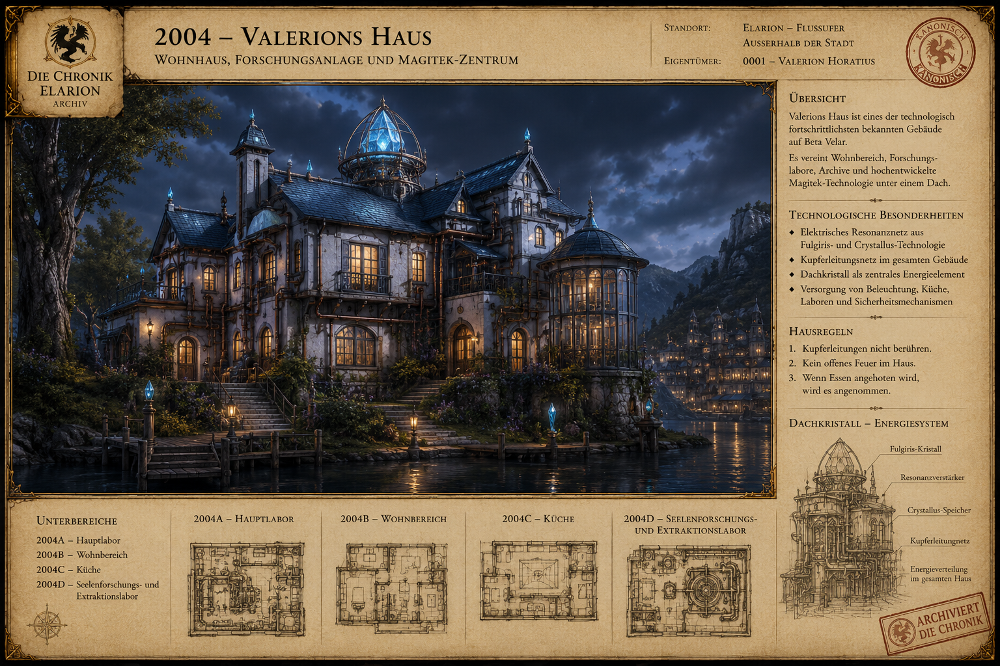

2004 – Valerions Haus
Typ: Wohnhaus, Forschungseinrichtung und Magitek-Zentrum
Standort: außerhalb von Elarion am Flussufer
Eigentümer: 0001 – Valerion Horatius
Valerions Haus ist eines der technologisch fortschrittlichsten bekannten Gebäude auf Beta Velar. Während der Großteil der Welt mit Feuer, Öfen und Kerzen arbeitet, besitzt Valerion ein Fulgiris-Crystallus-basiertes elektrisches Resonanznetz.
Unterbereiche
2004 Valerions Haus ├── 2004A Hauptlabor ├── 2004B Wohnbereich ├── 2004C Küche └── 2004D Seelenforschungs- und Extraktionslabor
Hausregeln
- Kupferleitungen nicht berühren.
- Kein offenes Feuer im Haus.
- Wenn Essen serviert wird, bitte nicht ablehnen.